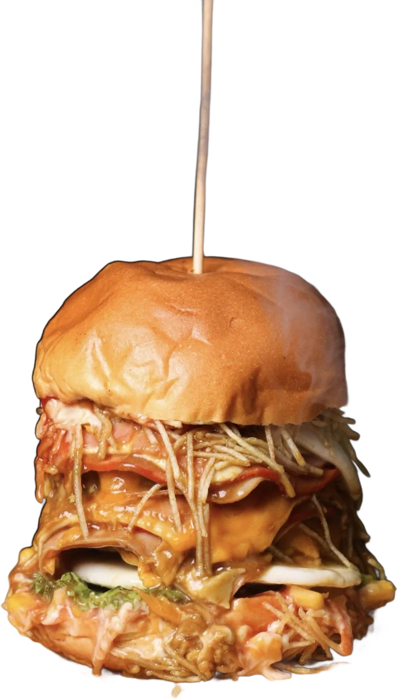
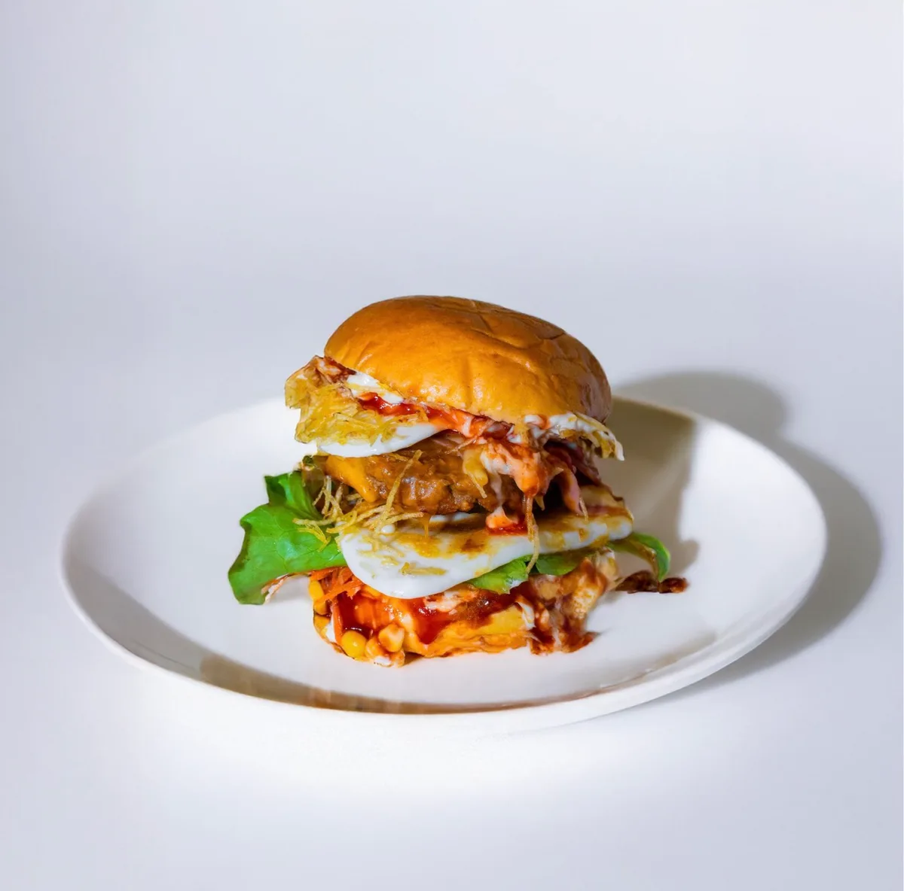

Morde & Chora

Hambúrgueres empilhados até ao palito. Feitos na Amadora, para quem aguenta.
EncomendarSe não chorou, é porque ainda não mordeu.
Mais de
1600
hambúrgueres vendidos. E a contar.
O que dá nome à casa
- Pão brioche.
- Molho, milho e alface.
- 1.ª carne.
- Ovo estrelado.
- Queijo a escorrer.
- 2.ª carne.
- Fiambre e bacon.
- Batata palha.
- Pão por cima.
- E o palito.

Amadora, Lisboa.
Entregas: combina pelo WhatsApp, a gente diz-te se chega aí.
Horário, menu completo e o feedback de quem já chorou: nos destaques do Instagram.
Comeste o logótipo todo.
Já só sobram as chamas.Calma, já está outro a sair.
Agora pede o teu.
Pelo WhatsApp: 932 966 513